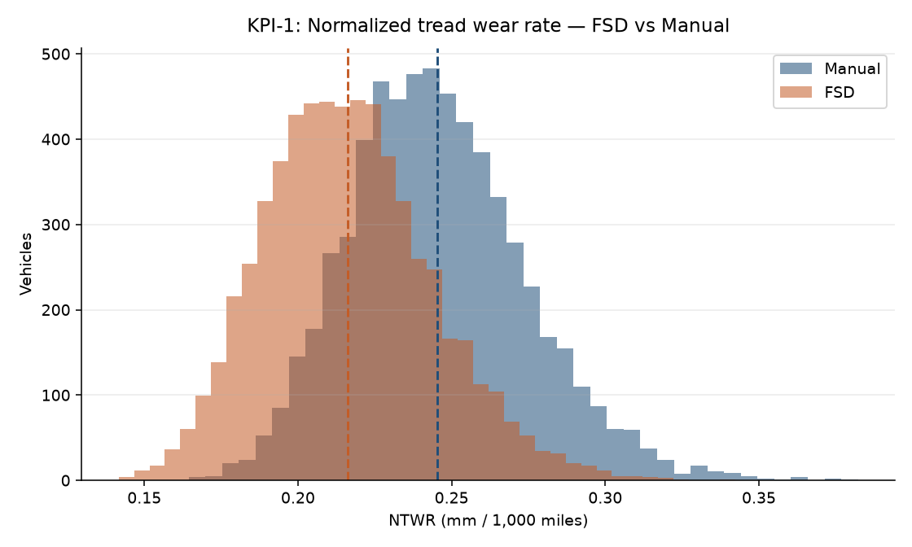
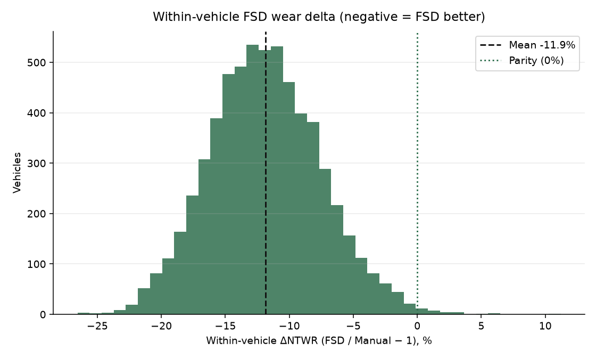
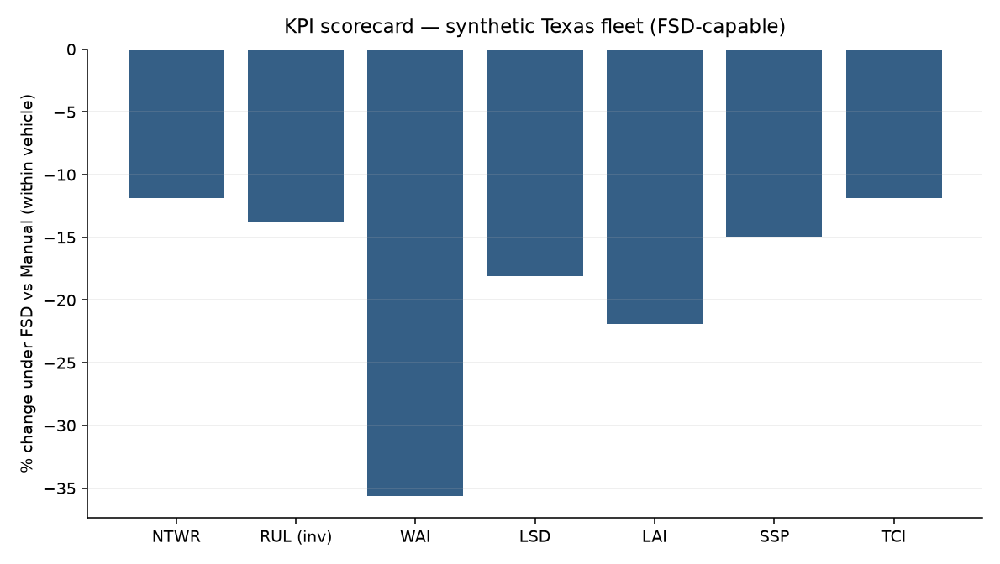
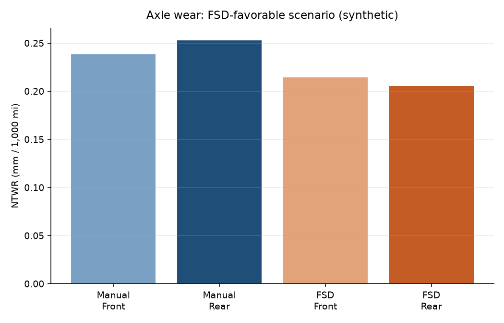
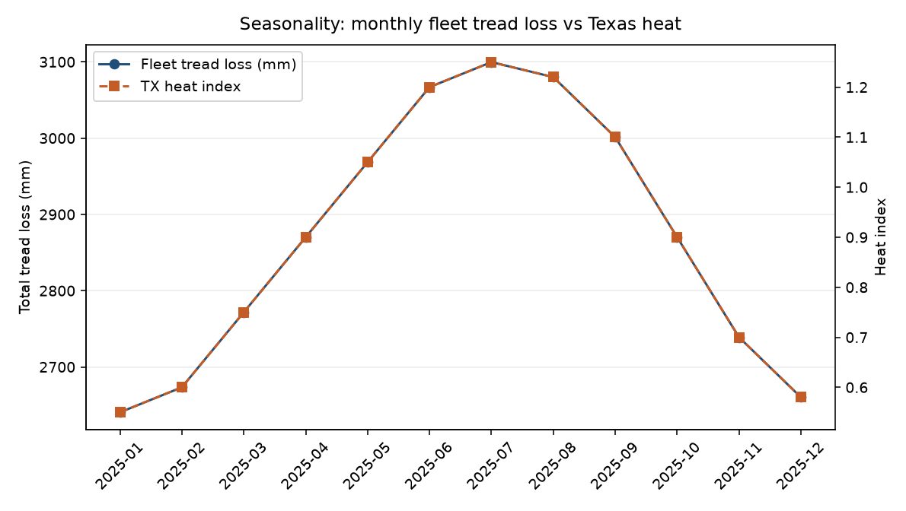
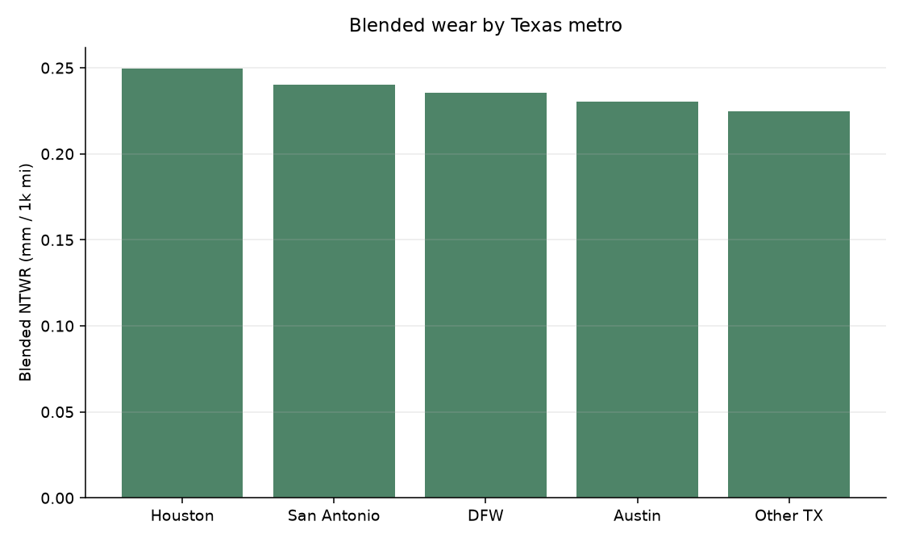
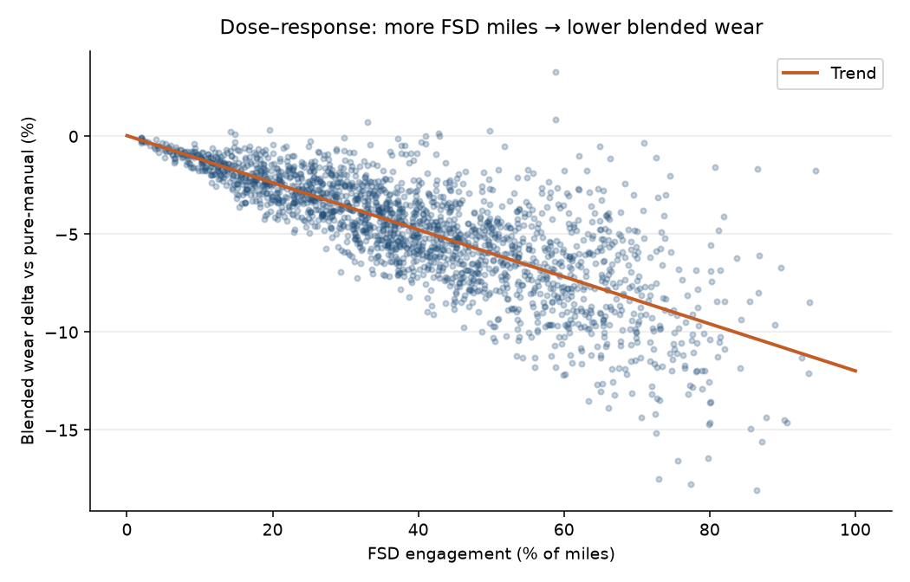
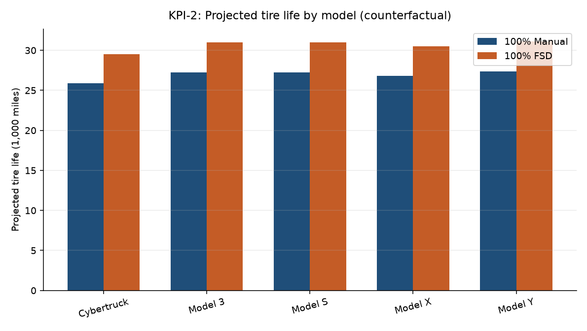

Executive summary
Among 6,194 FSD-capable vehicles, within-vehicle contrasts show FSD miles wearing tread -11.9% versus manual miles (95% CI -12.0% to -11.8%) in this FSD-favorable synthetic scenario. Counterfactual tire life moves from 27.2k to 30.9k miles (+13.8%). Rear/front NTWR ratio is 1.062 (manual) vs 0.959 (FSD). Lateral dose, steering-slip, and asymmetry fall alongside longitudinal aggression — consistent with smoother, lower-scrub FSD pathing.
Adverse-wear decision rule (≥15% NTWR premium for FSD): NOT HIT at the mean; ≥10% threshold: NOT HIT (expected not to hit under an FSD-favorable assumption).
KPI results (FSD-capable, within-vehicle)
| KPI | Manual | FSD | Δ | p (paired t) |
|---|---|---|---|---|
| 1 NTWR (mm/1k mi) | 0.245 | 0.216 | -11.9% | 0.00e+00 |
| 2 Tire life (mi) | 27,196 | 30,933 | +13.8% | — |
| 3 WAI | 0.070 | 0.045 | -0.025 | 0.00e+00 |
| 4 LSD (min/100 mi) | — | — | -18.1% | 0.00e+00 |
| 5 LAI (events/100 mi) | — | — | -21.9% | 0.00e+00 |
| 6 SSP | — | — | -15.0% | 0.00e+00 |
| 8 TCI ($/1k mi) | $39.17 | $34.51 | -11.9% | — |
Interpretation
- Primary wear outcome (NTWR) is lower under FSD in this FSD-favorable synthetic scenario.
- Mechanism mix: ↓ LSD / SSP / WAI / rear scrub; ↓ LAI (smoother long. control).
- Economics: tire cost intensity changes ~-11.9% under pure-FSD counterfactual.
- Texas heat (TPS) is modeled as a confounder shared across modes, stratified by metro/month.
Visuals








By Texas metro
| Metro | N | Blended NTWR | Mean FSD engagement | TPS hours |
|---|---|---|---|---|
| Houston | 2,685 | 0.249 | 24.9% | 370 |
| San Antonio | 1,221 | 0.240 | 24.5% | 339 |
| DFW | 3,206 | 0.236 | 24.5% | 340 |
| Austin | 1,882 | 0.231 | 25.8% | 339 |
| Other TX | 1,006 | 0.225 | 23.9% | 339 |
By model
| Model | N | Blended NTWR | Life 100% Manual | Life 100% FSD |
|---|---|---|---|---|
| Cybertruck | 501 | 0.272 | 25.9k | 29.5k |
| Model 3 | 3,502 | 0.231 | 27.2k | 31.0k |
| Model S | 787 | 0.244 | 27.4k | 31.2k |
| Model X | 666 | 0.249 | 26.8k | 30.5k |
| Model Y | 4,544 | 0.237 | 27.4k | 31.2k |